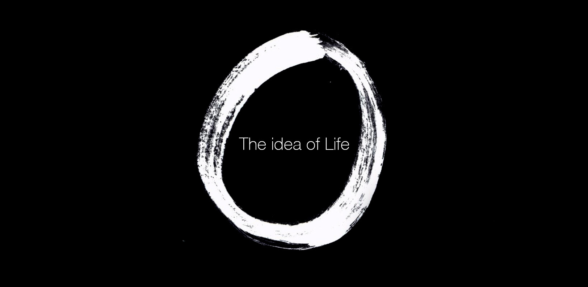
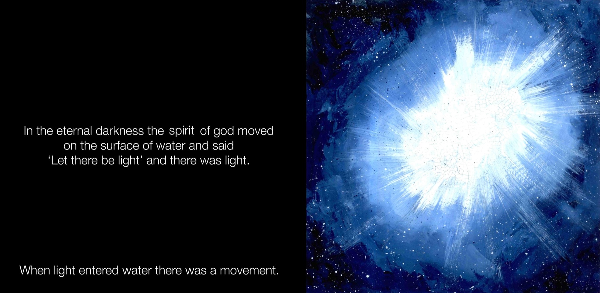
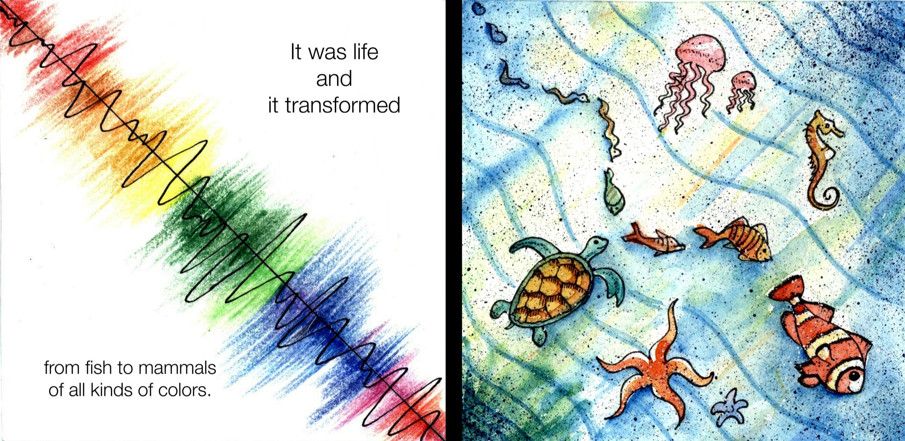
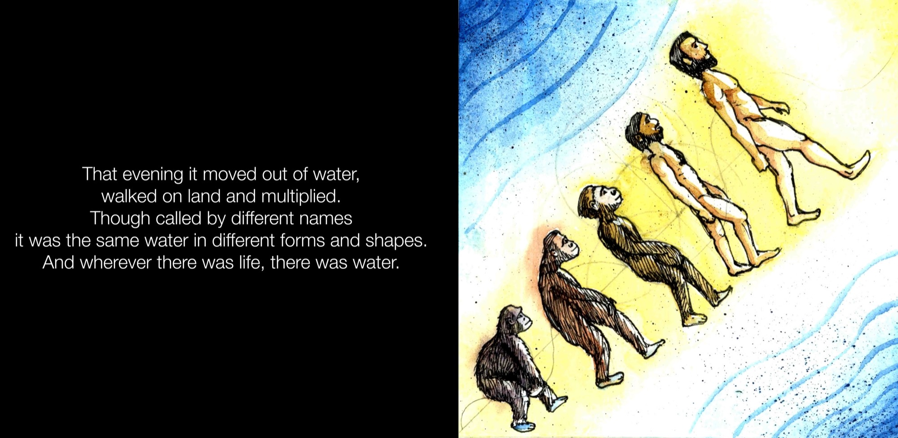
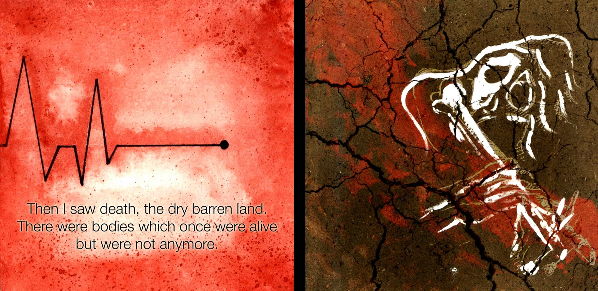
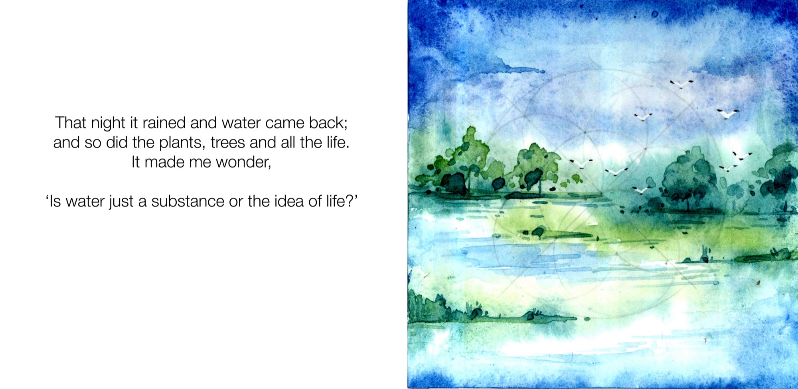
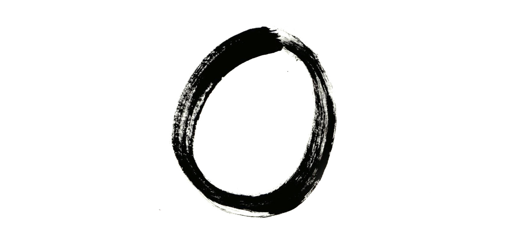

This is a small storybook exploring the concept of the water element. Instead of relying on syntactic visuals, the book incorporates semantic, pragmatic, and abstract visuals to convey its message.







END